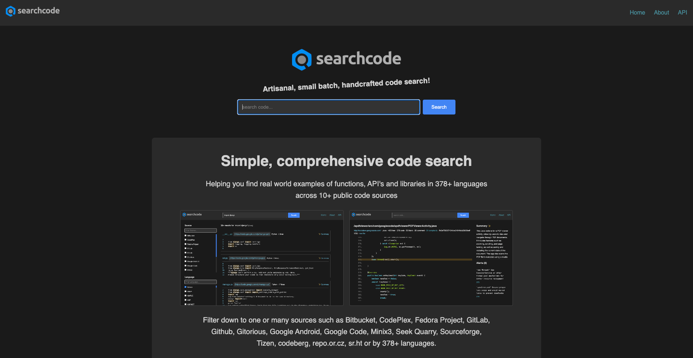
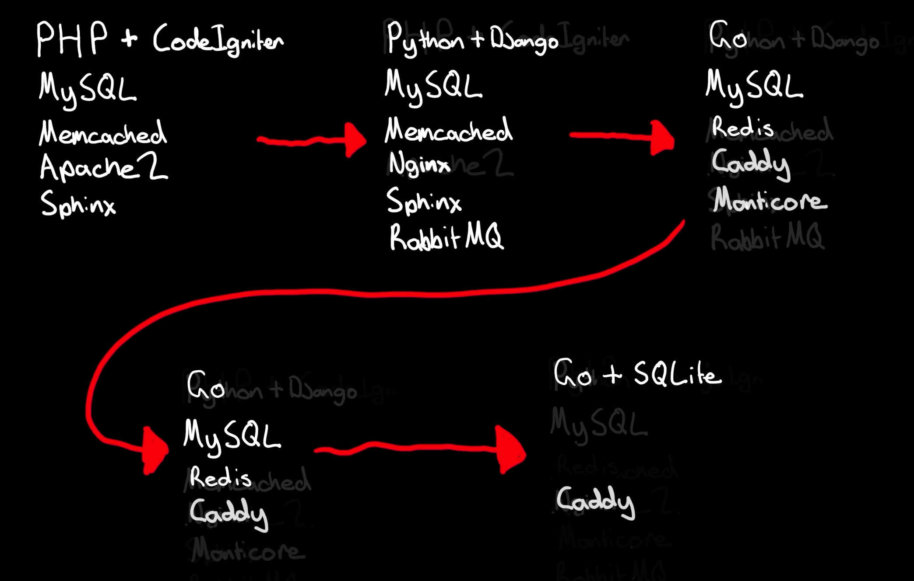
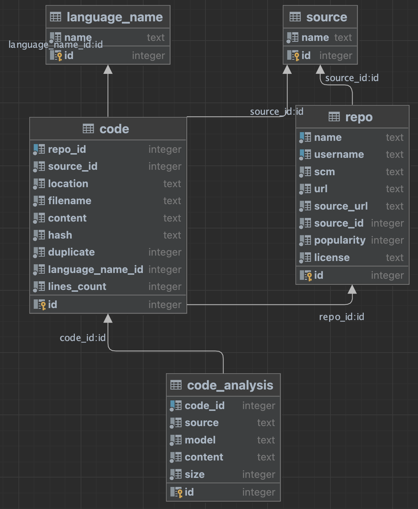

searchcode.com's SQLite database is probably bigger than yours
So yeah... as it says the database is probably bigger than yours..
-rw-r--r-- 1 searchcode searchcode 6.4T Feb 17 04:30 searchcode.db
I have talked about searchcode.com before, and the talks will continue until morale
improves.
Actually im not sure if it is the largest SQLite database in the world. I did find some random
thread with someone talking about a 7TB one they worked on, but no reciepts to prove it. Im fairly
confident some CERN intern has a 100TB one working away somewhere they forgot about thats just
sucking up LCH data.
Its the largest one I know of thats public facing though.
History

The constant between everything till now was the use of MySQL as the storage
layer. The reasons for using it initially was it was there, I knew how to work it and it would
scale along with my needs fairly well. So what changed? If you look at my previous choices you
will see there is in general a move to reducing the number of dependencies. The older and more
crusty I get the more I appreciate having a single binary I can just deploy. Single binary
deploys are very simple to reason about.
Note that I dropped redis as well... yes I wrote my own caching layer because I am a glutton for
punishment.
SQLite "database is locked"
dbRead, _ := connectSqliteDb("dbname.db")
defer dbRead.Close()
dbRead.SetMaxOpenConns(runtime.NumCPU())
dbWrite, _ := connectSqliteDb("dbname.db")
defer dbWrite.Close()
dbWrite.SetMaxOpenConns(1)
So there are few problems with SQlite, the first being that you run into "the database is locked" a
fair bit when using it. This is because SQLite is a file based database and only allows a single
write connection at a time. This is a problem if you are trying to read and write at the same time.
Most people in Go solve this with a single connection and a mutex. However I found a post somewhere
where they suggested having two connections, one for reading and one for writing.
The above is how you implement such a thing.
Note there is a second step to this... which is to set the pragma settings.
SQLite "database is locked"
func connectSqliteDb(location, name string) (*sql.DB, error) {
db, err := sql.Open("sqlite", fmt.Sprintf("%s.db?_busy_timeout=5000", path.Join(location, name)))
if err != nil {
return nil, err
}
_, err = db.Exec(`
pragma journal_mode = wal;
pragma synchronous = normal;
pragma temp_store = memory;
pragma mmap_size = 268435456;
pragma foreign_keys = on;
pragma busy_timeout = 5000;`)
if err != nil {
slog.Warn("pragma issue", "err", err.Error())
}
return db, nil
}
You can just do things, such as lowercase SQL
Tada the pragma settings you need. The above is what I use for searchcode.
PRAGMA journal_mode = wal;
What it does: Switches the database to Write-Ahead Logging (WAL) mode instead of the default
rollback journal mode.
Effect:
Transactions are written to a separate WAL file before being committed to the database, allowing
concurrent reads and writes.
Readers can access the database while a writer is active (unlike rollback mode, where writes
lock
the entire file).
Writes are faster because they append to the WAL file rather than rewriting the main database
file.
Trade-off: Adds a WAL file (and potentially a -shm file for shared memory), increasing disk
usage
slightly. Checkpointing (merging WAL into the main DB) can lag under heavy write loads.
PRAGMA synchronous = normal;
What it does: Sets the synchronization level to Normal, balancing safety and speed.
Effect:
SQLite syncs data to disk at critical moments (e.g., after a transaction commits) but not as
aggressively as FULL mode.
Faster than FULL (which syncs after every write) but slower than OFF (no syncing).
Protects against data loss in most crash scenarios, except rare OS or hardware failures.
Trade-off: Slightly less durability than FULL (e.g., a power failure mid-transaction might
corrupt
the WAL), but much better performance than FULL.
PRAGMA temp_store = memory;
What it does: Forces SQLite to store temporary tables and indices in memory instead of on disk.
Effect:
Speeds up operations involving temporary data (e.g., complex JOINs, ORDER BY, or GROUP BY
queries).
Reduces disk I/O, which is especially helpful for large datasets or frequent temp table use.
Trade-off: Increases memory usage. If your database workload generates lots of temp data and
memory
is tight, this could strain system resources.
PRAGMA mmap_size = 268435456;
What it does: Sets the memory-mapped I/O size to 268,435,456 bytes (256 MB).
Effect:
Maps the first 256 MB of the database file into memory, allowing SQLite to access it directly
via
memory pointers instead of traditional read/write calls.
Boosts read performance for frequently accessed data within that 256 MB range.
Trade-off: Uses more virtual memory, and benefits diminish if the database exceeds 256 MB (only
the
first chunk is mapped). Useless if the OS or hardware doesn't support memory mapping.
PRAGMA foreign_keys = on;
What it does: Enables foreign key constraints enforcement.
Effect:
Ensures referential integrity—e.g., you can’t delete a parent row if a child row references it,
or
insert a child row with an invalid foreign key.
Makes the database behave more like traditional RDBMSes (e.g., PostgreSQL).
Trade-off: Slightly slower writes due to extra checks, but it’s a safety net for data
consistency.
(Foreign key support is off by default in SQLite.)
PRAGMA timeout here just specifies the timeout on the lock. You can also do it in most connection
strings, I have repeated it here so you can see both.
SQLite cross compiling
GOOS=linux GOARCH=amd64 go build -ldflags="-s -w"
https://github.com/mattn/go-sqlite3
https://modernc.org/sqlite <---- use this
So you can cross compile Go as you are probably aware, im working on a Mac but I target x64
linux. Cross compiling being one of the best things about Go.
This becomes problematic when you include C dependencies such as the most commonly used
SQLite driver which is the mattn one. Setting up cross compiling toolchains for C is
something I think I have done once in my life. Normally I would just create a virtual
machine for each target to build, however I wanted to build and debug locally with just the
Go toolchain.
Note it's possible to do this with the Zig toolchain these days... Its meant to be a lot
easier than setting up the C ones.
I am not familiar with this.
So the answer I turned to was the modernc sqlite driver, which is a pure Go implementation
of SQLite. It is not as fast as the C one, but worked out to be fast enough for my needs.
SQLC: The BEST ORM for Go
https://sqlc.dev/

I am not a fan of any existing ORM, with the exception of entity framework for C#. Ask me about that
later.
In Go I have tried most of them, GORM, sqlbuilder, raw SQL.
Raw SQL was the one I liked the most, but I also hate having to boilerplate... SQL being one.
SQLC is the best of both worlds. You write your SQL, and it generates the Go code for you based on
that and it also verifies the query against the supplied schema. This falls into Go's strengths of
code generation and static typing.
The only issue it has is that it does not work for dynamic queries, so where you have dynamic
filters,
in which case you write a SQL query that does most of what you need, then add a new Go file next to
the generated
code that has your filter and attach it to the *Queries struct.
In short SQLC is amazing. We have used it at Kablamo on a few projects now nobody has had an issue
with it
Conversion
Converting 6 TB of data...
increment := 10_000
for i := 0; i < totalRowCount; i += increment {
between, _ := db.GetBetween(i, i+increment)
tx, _ := sqliteDb.BeginTx(context.Background(), nil)
defer tx.Rollback()
withTx := db.WithTx(tx)
for _, b := range between {
_ = withTx.Insert(context.Background(), insertParams{
...
})
}
_ = tx.Commit()
}
So data conversions are usually one of those things that takes months of planning... however with a
team of 1 which was me, I was able to do this in under a week.
One problem I hit was I needed to convert close to a billion rows. Selecting is fine, but when you
write you tank your performance because the writes happen on each row.
You can of course write batch inserts...
But much easier is to just batch them using transactions. This is a
simple example of how you can do that. Note no error handling.
For searchcode I was able to convert the whole database, so 10 tables at about a billion rows
using code like the above in about 48 hours, but I was limited because the database was a spinning
rust HDD and I was writing to the same disk I was reading from.
So appox 6.4 TB read and 6.4 TB written in 48 hours. Not bad for a single thread on a single
spinning
rust HDD.
Compression...
Compress and Uncompress
select uncompress(content) from code;
insert into code (content) values (compress(?));PRAGMA compression = 'zip';sqlite-zstd "WARNING: I wouldn't
trust it with my data (yet)."
One of the things I did back in MySQL was compress the data. MySQL comes with a built in compress
and uncompress function.
Handy tip, if you ever want to transfer that data over the wire and decompress on a client, its just
gzip missing the header. Useful if you want to save some transfer bytes.
SQLite does not have a built in compress function. Unless you pay them... and I don't think it works
in
BTRFS
sudo apt update
sudo apt install btrfs-progs
# help identify all the disks
lsblk
# format
mkfs.btrfs /dev/disk/DISK_ID
# make mount point
mkdir -p /mnt/MY_DISK
# mount
sudo mount -o compress=zstd:5 /dev/disk/by-id/DISK_ID /mnt/MY_DISK
# add to fstab
echo '/dev/disk/by-id/DISK_ID /mnt/MY_DISK btrfs compress=zstd:3 0 2' | sudo tee -a /etc/fstab
So if you are prepared to get your linux hands dirty you can do transparent disk compression using
ZFS or BTRFS. I went with BTRFS because it was easier to setup.
I also used ZSTD as in my tests it works a lot better than gzip.
Funny story, I havent looked at doing this sort of thing in a long time. Last time I checked BTRFS
was not considered stable and ReiserFS was a thing.
ReiserFS has since been removed from the kernel, and BTRFS is now the default system for some
distros.
Its actually not that hard to configure, although I ran into issues when trying to validate it.
Compression Results
48 hours to transfer DB to new server!
$ compsize /mnt/data/searchcode.db
Processed 1 file, 16481352 regular extents (16481360 refs), 0 inline.
Type Perc Disk Usage Uncompressed Referenced
TOTAL 76% 4.8T 6.3T 6.3T
none 100% 4.3T 4.3T 4.3T
zstd 23% 470G 1.9T 1.9T
Not quite as good as I got in my tests, but still considerably smaller.
When I tested it on some sample data I was getting greater than 50% compression. This is not that
good.
Note you need to use compsize to calculate this, as ls is unaware of the compression of the file,
which makes sense.
Backups.
b2 upload_file searchcode ./searchcode_analyse.dbFuture state https://litestream.io/
Using backblaze to save some money. Just do the above...
If you are looking to improve things, use litestream which hooks into the WAL and streams it to
to the bucket storage for you.
Results...
It just works.
Was a little worried at first, but now I am using it for a lot more than it could previously cope
with.
More flexible, can create more databases to handle other things, just another file.
Databases can be treated like tables.
As for SQLite? Well so far it appears to be working fine? While the schema searchcode uses is fairly
simple, avoiding joins where possible and properly indexed I would not have expected SQLite to cope
as well as it has. In fact making searchcode.com live with it was a giant leap of faith in it.
Everything compared to the previous instance being much faster, from searches, to fetching pages and
all of the backend processes that run against the database.